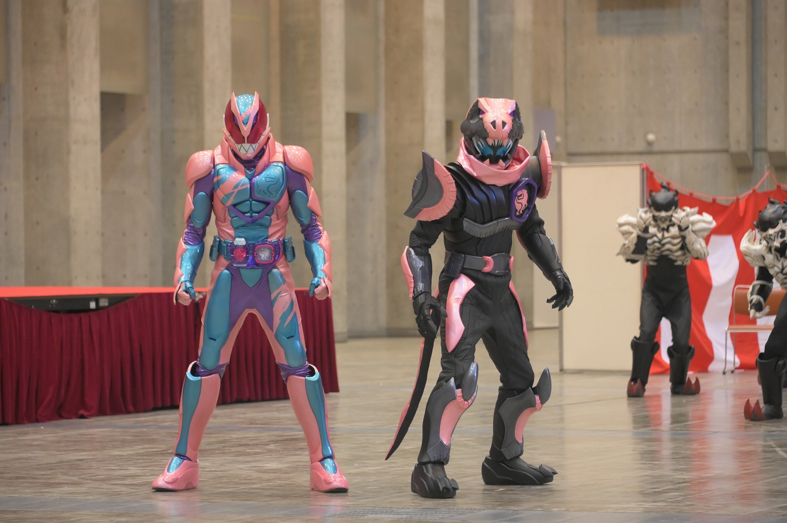
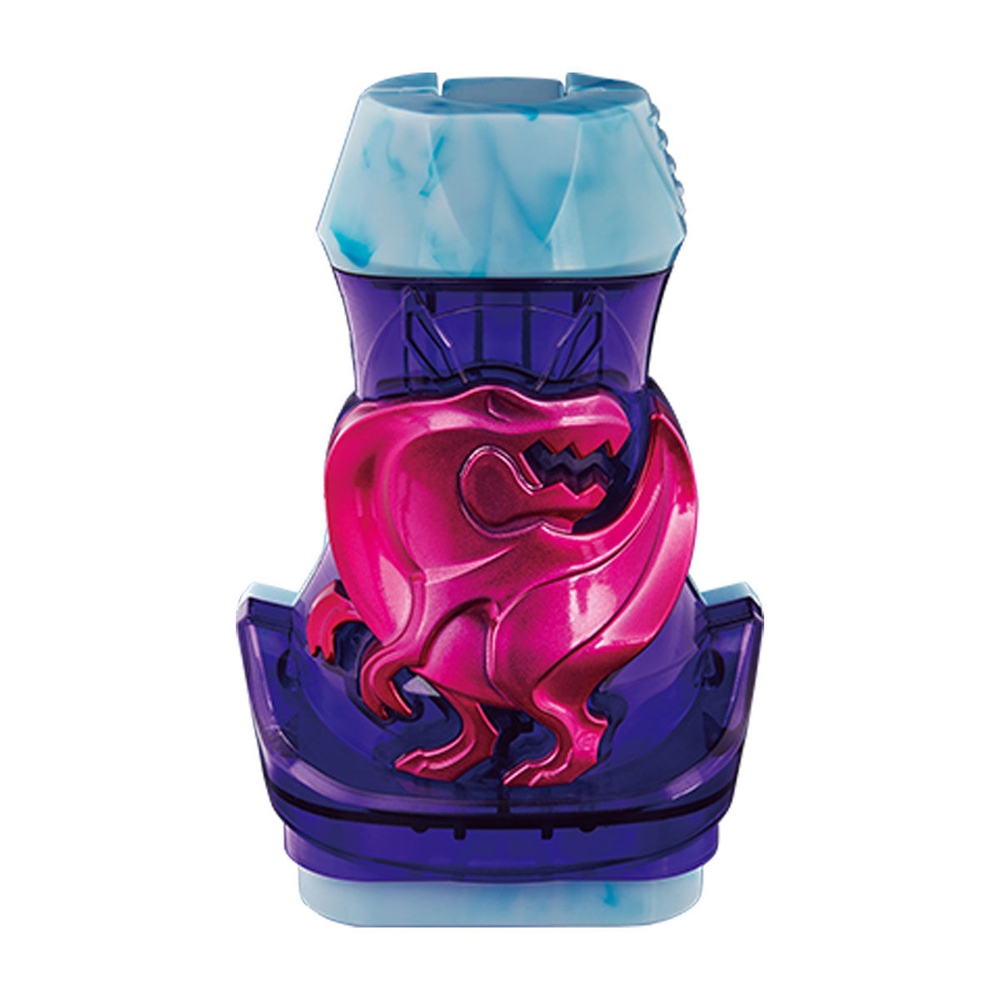
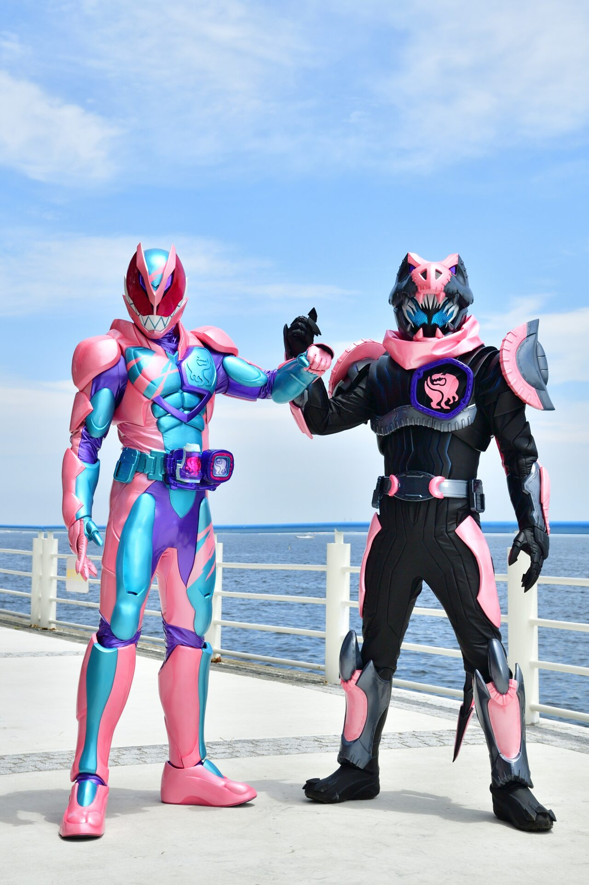
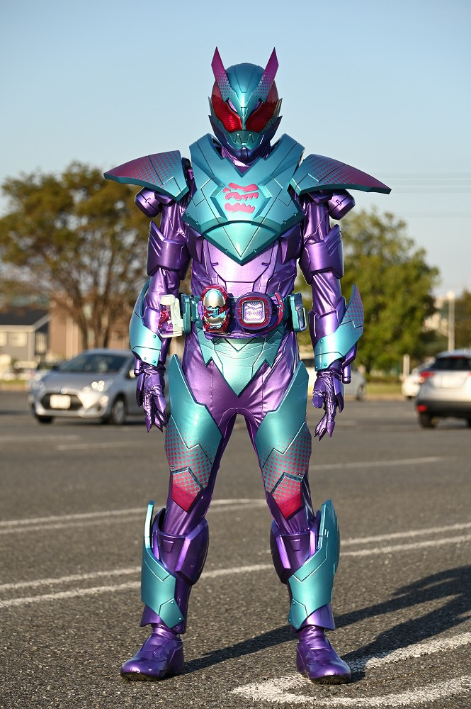
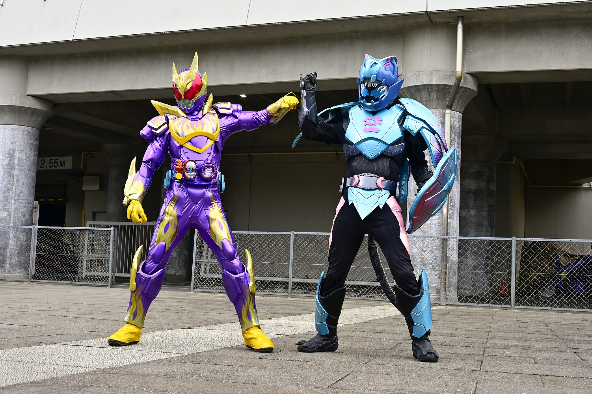
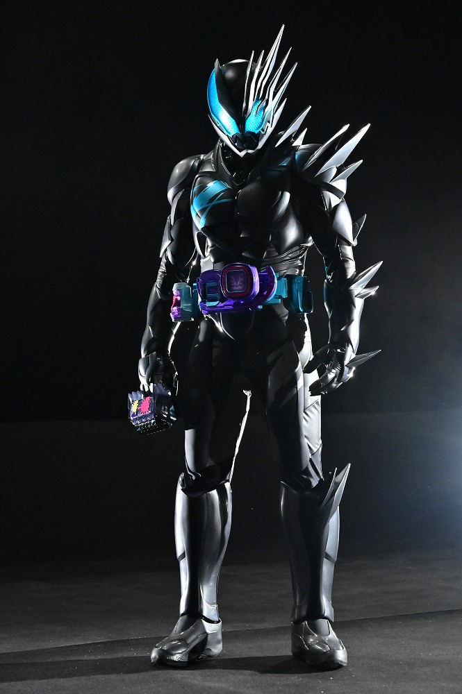
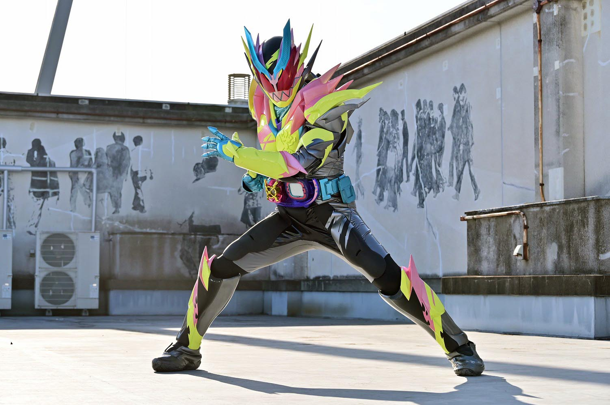
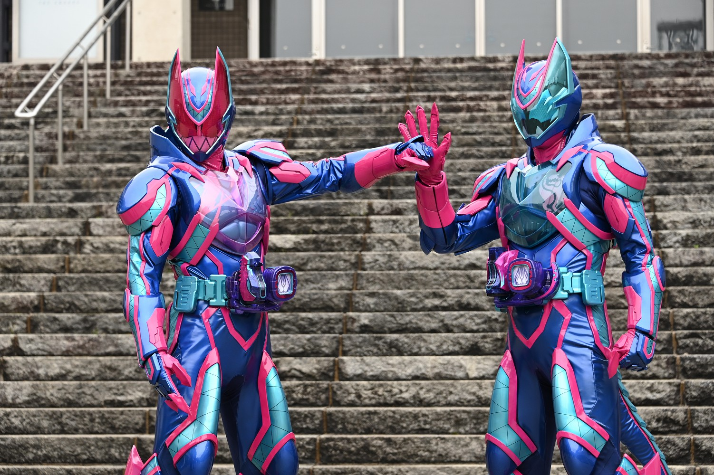

2021年から放送された「仮面ライダーリバイス」に登場する仮面ライダー
変身者は五十嵐一輝。リバイスドライバーとバイスタンプを使い変身する。
2人のライダーであり、左がリバイ、右がバイスで合わせてリバイス。
基本形態はレックスゲノム。５０周年記念作品。
リバイ 身長：198.2cm 体重：93.6kg パンチ力：8.9t キック力:32.1t ジャンプ力：ひと跳び28.2m 走力：100mを3.8秒程度
リバイスドライバーにバイスタンプを押印し、セット。その後スタンプを傾ける事で変身する。
リバイスドライバーは自身の心に潜む悪魔を実体化させ、制御装甲を
装着させることにより、悪魔を御することができる。
また、悪魔と組体操をすることでリミックスという別フォームになることができる。

生物の遺伝子が組み込まれたスタンプ。
生物の遺伝子のほかに、仮面ライダーの遺伝子も組み込まれており、
マンモスだと電王、イーグルだとＷの遺伝子が組みもまれている。
一見全然関係ないものと一緒に組み込まれているが、
何を基準にしているのかは分からない。

レックスゲノム
「レックス」バイスタンプで変身
Ｔレックスの遺伝子により、パワフルな戦闘が可能。
脚部が張ったしており、すさまじいキックを繰り出す。
珍しいピンクの仮面ライダー。バイスの声優はジャイアン。

バリッドレックスゲノム
「バリッドレックス」バイスタンプで変身
１０種のスタンプの力を組み合わせた形態。
冷凍攻撃を主体とする。強化されるのはリバイのみであり、
バイスは変身時に発生した殻のようなものを接着剤でくっつけた盾を使用する。

ボルケーノレックスゲノム
「ボルケーノ」と「バリッドレックス」バイスタンプを装着し、変身
マグマエネルギーを活用した戦いができるが、長時間使用すると体が爆発してしまう。
そのため、バイス側はバリッドレックスゲノムになり、リバイを常時冷却している。
目立った活躍がない。

ジャックリバイス
「ローリングバイスタンプ」という特殊なバイスタンプで変身
バイスが主軸となる形態。
悪魔特有の荒々しい戦闘が得意。
乗っ取り系ではあるが、なんかよくわかんない形態。でもかっこいい。

仮面ライダーリバイス サンダーゲイル
「サンダーゲイル」バイスタンプを使い変身
リバイとバイスが融合した姿。
轟雷と疾風の力を持つ。
これまでのゲノムの力を凌駕しており、
パンチの1発で相手が吹き飛ぶ。
タイトル回収が早かった気がする。

アルティメットリバイス
「ギファードレックス」バイスタンプで変身
これまではリバイ側がベルトを着けていたが、
これはバイスもベルトをつけ、変身する必要がある。
磁気の力が付与されており、相手にマグネットフィールドの攻撃を行う。
2人で戦えば戦うほど戦闘力が上昇する。
仮面ライダー一覧